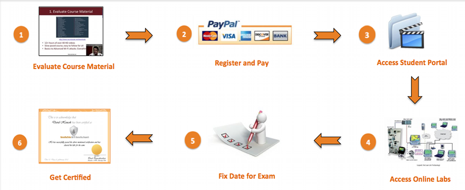

Pengenalan Sistem KPU Ikamaru Jakarta dan Sekitarnya
KPU Ikamaru Jakarta dan Sekitarnya
IKAMARU atau lebih akrab disapa dengan Ikatan Alumni Madrasah Aliyah Raudlatul Ulum Cabang Jakarta dan Sekitarnya, merupakan wadah silaturahmi untuk memerpererat rasa kekeluargaan ketika santri sudah lulus (Alumni) yang Notabenya masih terikat dengan nama almamater pesantren. sehingga angkatan atas sampai mahasiswa yang baru luulus pun bisa saling mengenal para senior yang sudah lama lulus dari pesantren yang sudah berkiprah di area jakarta dan sekitarnya. baik sudah berkeluarga maupun santri yang baru lulus dari pesantren.
Alur Pendaftaran Anggota Ikamaru Jakarta dan Sekitarnya Untuk Voting Calon Ketua Ikamaru Selanjutnya
Profil Para Calon Ketua Ikamaru Periode 2015/2016
Calon Pertama
Integer volutpat ante et accumsan commophasellus sed aliquam feugiat lorem aliquet ut enim rutrum phasellus iaculis accumsan dolore magna aliquam veroeros.
Calon Kedua
Integer volutpat ante et accumsan commophasellus sed aliquam feugiat lorem aliquet ut enim rutrum phasellus iaculis accumsan dolore magna aliquam veroeros.